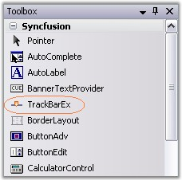
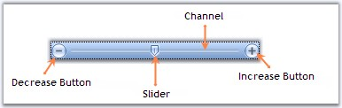

The TrackBarEx is a new Office2007 control, which has a track bar or a pointer which slides between the minimum value and maximum value specified. The user can drag the track bar along the line and also, the pointer can be placed at a particular point by clicking a position inside this TrackBar.
A TrackBarEx can be added to your form by simply dragging-and-dropping the control from the toolbox.

Figure 1435: TrackBarEx control in Toolbox

Figure 1436: TrackBarEx Components
It can be created programmatically using the below code snippets.
|
[C#]
private Syncfusion.Windows.Forms.Tools.TrackBarEx trackBarEx1; this.trackBarEx1 = new Syncfusion.Windows.Forms.Tools.TrackBarEx(); this.Controls.Add(this.trackBarEx1); |
|
[VB.NET]
Private trackBarEx1 As Syncfusion.Windows.Forms.Tools.TrackBarEx Me.trackBarEx1 = New Syncfusion.Windows.Forms.Tools.TrackBarEx Me.Controls.Add(Me.trackBarEx1) |
Various Features and Customization options are discussed in the following topics.
 Button, Slider and Channel Settings
Button, Slider and Channel Settings